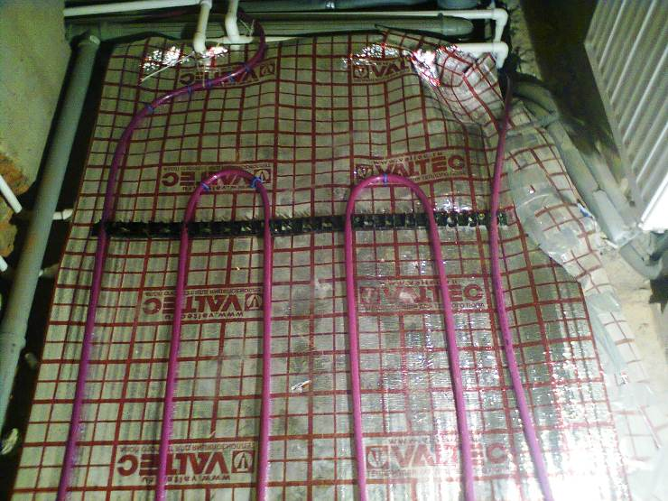
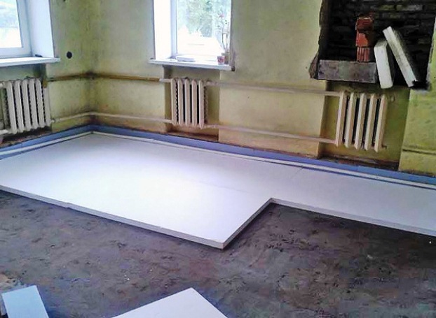

Качественный электромонтаж в Санкт-Петербурге и ленобласти, стаж 12 лет. Частный электрик, недорого и качественно.
Тел. 8 904 642 08 57 Николай.

Сделать тёплый пол в частном доме, фото и цены.
Наверное, пол – это единственная поверхность в комнате, с которой людям приходится контактировать ежедневно и подолгу – топчутся по нему не только в обуви, но и босыми ногами. По этой причине, утепление пола особенно важно для тех владельцев, чьи квартиры располагаются на нижнем этаже в многоэтажном доме, а также для владельцев частных домов. К поверхностям, поэтому, предъявляются определенные требования: например, разница в температурах пола и помещения не должна быть больше двух градусов. Если же это не так, то необходимо прибегнуть к утеплению. Очень сильно такая разница ощущается поздней осенью, в зимние месяцы и ранней весной.
Сколько стоит монтаж тёплого пола в частном доме?
|
Площадь пола в кв. м. |
Цена за монтаж 1 кв. м. в руб. |
До 10 кв. м. |
От 650 |
15. |
600 |
20 |
550 |
25 |
500 |
30 |
450 |
До 40 кв. м. |
400 |
От 40 кв. м. |
От 350 руб. |
Существует несколько способов утепления полов.

Для утепления полов, в перекрытиях между подвалом и первым этажом часто настилают еще один уровень тепловой изоляции. Из физики известно, что потеря тепла происходит сверху вниз сплошным потоком через пол в подпол (имеются в виду те многоэтажные дома, в которых подвалы не отапливаются).
При этом кроме теплопотерь, возникает также конденсация паров влаги. Эти пары выделяются из теплого комнатного воздуха. А это негативно влияет на качество утеплительного материала, ведь он впитывает всю выделяющуюся влагу. А чрезмерное увлажнение плохо сказывается на состоянии этого материала. Для предотвращения можно использовать для утепления влагостойкий материал, или (а лучше в любом случае) настилать еще один слой перед изоляцией - пароизоляционный. Например, в этом качестве подойдет самая обычная полиэтиленовая пленка, толщиной примерно 150 мкм.
 Стоит отметить, что различные напольные покрытия различаются коэффициентом теплоусвоения. Так, бетонный пол значительно холоднее паркетного, ведь бетон активнее дерева вбирает тепло. Именно поэтому специалисты рекомендуют использовать как отделку такие напольные покрытия, которые хуже усваивают тепло, тогда пол не будет все время холодным. Это ДСП, паркет, линолеум, дерево или полимерная плитка.
Стоит отметить, что различные напольные покрытия различаются коэффициентом теплоусвоения. Так, бетонный пол значительно холоднее паркетного, ведь бетон активнее дерева вбирает тепло. Именно поэтому специалисты рекомендуют использовать как отделку такие напольные покрытия, которые хуже усваивают тепло, тогда пол не будет все время холодным. Это ДСП, паркет, линолеум, дерево или полимерная плитка.
Если у вас первый этаж и бетонный пол, то его необходимо утеплять.
Если вы живете в многоэтажном доме и ваша квартира располагается на первом этаже, а внизу подвальное помещение, в которое вы имеете доступ, то есть возможность утеплить пол в квартире обыкновенным пенопластом со стороны подвала. Для этого нужно пенопласт приклеить с помощью специального клеевого раствора либо смеси цемента и клея. Промежутки между пенопластом легко можно замазать при помощи строительной пены. Но у этого способа есть и недостаток. Ведь возможно, что ваши соседи не поддержат ваш энтузиазм по поводу утеплению пола. К тому же, утеплить-то пол своей квартиры пенопластом очень просто, а вот определить ее точное местоположение намного труднее. Если вы все-таки выбрали этот метод, вам нужно вооружиться рулеткой и планом вашего дома, и помечать нужную территорию.
Если же возможности утеплить пол квартиры со стороны подполья нет, то можно поступить таким способом: устроить лаги, а между ними проложить доски или фанеру. А уже на эти доски укладывать листы пенопласта.
Это просто, быстро, но есть и определенные недостатки. Если вы живете в панельном доме, то при таком способе утепления пола уменьшится высота потолков.
Если в вашей квартире пол из дерева, то вы можете легко разобрать его, старые доски заменить новыми, а между лагами уложить пенопласт, тогда размеры помещения не изменятся.
Утеплить пол с помощью пенопласта.

Если возможности утеплить пол с помощью пенопласта нет, то возможно использовать в этих целях керамзитом. Однако придется создавать цементную стяжку слоем не меньше девяти сантиметров. Недостаток такого способа очевиден – из-за большой толщины теплоизоляционных и гидроизоляционных слоев значительно уменьшится высота потолка в квартире. Но, конечно, имеются и преимущества: так, в цементной стяжке, применяя керамзит легко можно сделать теплые полы, например, водяные или электрические.
Если вы проживаете в частном двухэтажном доме, или в одноэтажном, утеплять пол необходимо. И неважно, есть ли у вас подвальное помещение или его нет. А так как вы хозяин в своем доме, то у вас есть возможность сделать полы в помещении теплыми, конечно, располагая определенными финансовыми средствами.
В таком случае утеплить пол можно на стадии еще чернового пола. И как считают многие строители - специалисты, на сегодня лучшим материалом для теплоизоляции является пенополистирол экструдированный. Этот материал обладает прекрасными теплоизоляционными свойствами, такими как влагостойкость и выдержка к механическим воздействиям. Тем более, экструдированный пенополистирол станет отличным материалом для теплоизоляции в тех районах, к которых грунтовые воды находятся рядом с подошвой фундамента.
Пенопласт укладывают на песок со щебнем, толстым слоем, не менее десяти сантиметров. Какой толщины будет утеплитель зависит от индивидуального климата каждого определенного региона. В качестве гидроизоляции в этом случае берется пленка из полиэтилена. Ее укладывают на утеплительный материал с теплой стороны, прикрепляя с помощью обычного клея, не используя пластические вещества. После того, как вы уложили гидроизоляционный слой, заливайте раствор стяжки, который состоит из песка с цементом (можно использовать два слоя ГВЛ). Если же вы хотите устроить теплые полы, то на стяжку необходимо укладывать нагревательные элементы.
А если утеплять полы вы планируете при помощи обычных «дедовских» материалов, то вполне можно использовать в этих целях минераловатные плиты или стекловату. Но имейте в виду, что такого рода утеплители не обладают в достаточной степени такими характеристиками, как влагостойкость, поэтому вам придется тщательно их гидроизолировать.
Если у вас деревянный дом, в котором настилка пола осуществляется по лагам над грунтом, утеплитель нужно прокладывать в расстояние между лагами, вместе с гидроизоляцией, и на подшитые с нижней стороны доски. А гидроизоляционный и пароизоляционный пол укладывается на утеплитель по тепловой изоляции с ее теплой стороны.
Тем эффективнее будет утепление пола, чем больше поверхностей в квартире вы утеплите. Утеплять можно не только пол, но и стены, двери, окна.
 Поменять проводку в квартире.
Поменять проводку в квартире. Сколько будут стоить материалы.
Электрика в загородном доме стоимость работ.

Замена электропроводки в панельном доме.
Расценки на электропроводку квартир.
Замена проводки в хрущевке.
Электромонтаж в частном доме.
Электрика в загородном доме.
Сколько стоит замена электропроводки в двухкомнатной квартире?.
Электрик в новостройку однокомнатная квартира недорого.

Сколько стоит поменять электропроводку в 3-х комнатной квартире.